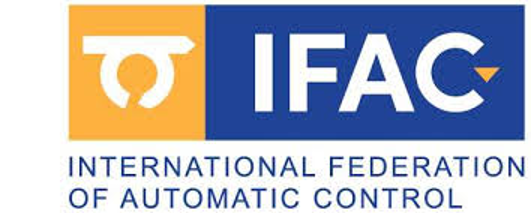

CPHS 2026
Dec 11-12, 2026
Los Angeles
Los Angeles
| Home | Call for Papers | Organizers | Program | Registration | Travel |
The sixth Workshop on Cyber-Physical Human Systems (CPHS 2026), sponsored by the American Automatic Control Council (AACC), tentatively co-sponsored by the International Federation of Automatic Control (IFAC), will be held from Saturday to Sunday, December 11-12, 2026, in Los Angeles, CA, United States. On behalf of the CPHS 2026 Organizing Committee and AACC, we cordially invite you to participate in this workshop and take advantage of a unique opportunity to present your work and connect with colleagues from around the world.
CPHS 2026 aims to bring together researchers and practitioners to share recent scientific and technological advances, and to deepen the understanding of cyber-physical human systems. Advances in computing, communication, control, and learning have enabled increasingly tight integration of cyber-physical systems with humans across a wide range of domains. As autonomy becomes more pervasive, new theories, models, methods, and algorithms are needed to support dynamic interaction and information exchange between cyber, physical, and human components. These innovations will enable seamless integration, unlock new capabilities, and achieve performance levels beyond what is possible from humans or autonomous systems alone.
Details will be available soon.
Initial Submission: 29-May-26
Decision Notification: 14-Aug-26
Early Registration Deadline: 16-Oct-26
Late Registration Deadline: 12-Dec-26
|  |